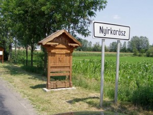
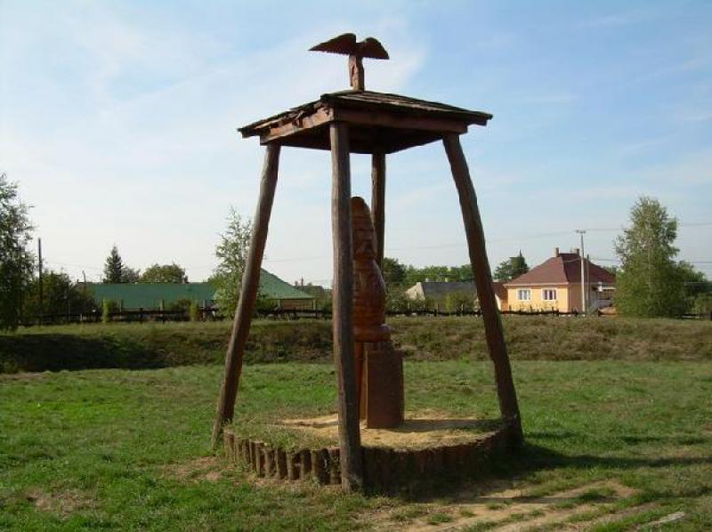
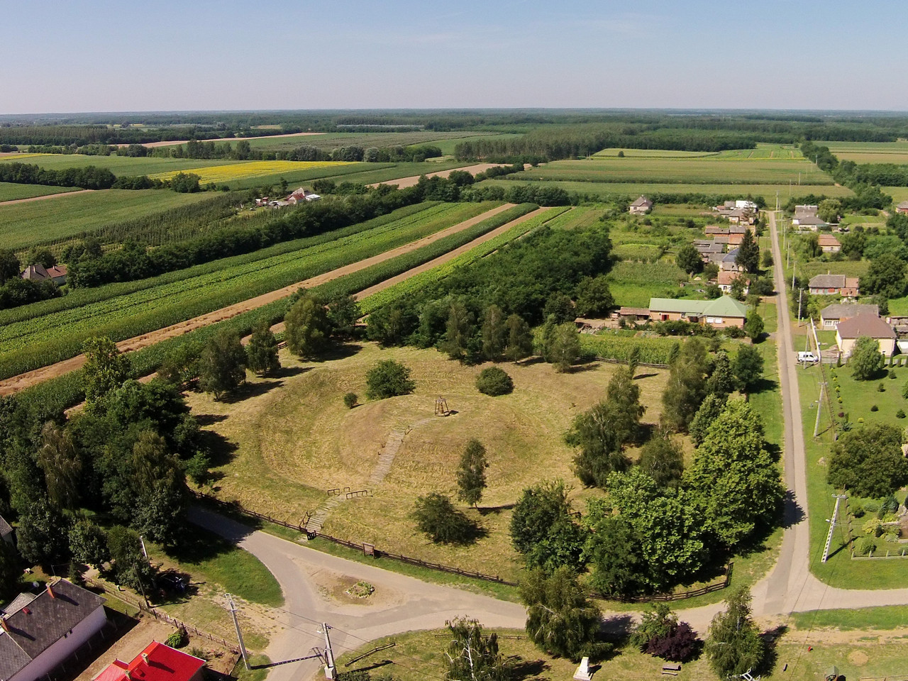
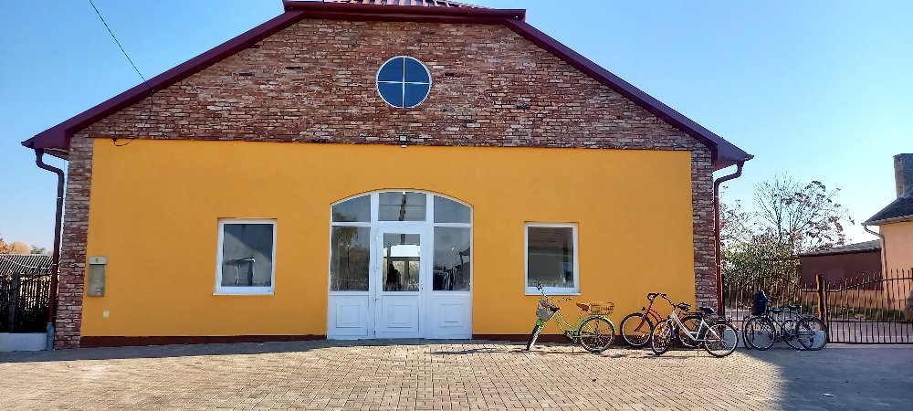
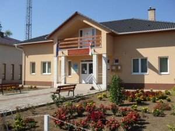

Nyirkarász
A megye, és egyben a Nyírség északkeleti részén fekszik, Kisvárda, Baktalórántháza és Vásárosnamény városok között, a kistáj középső részén. A közvetlen szomszédos települések: észak felől Gyulaháza, délkelet felől Nyírmada, dél-délkelet felől Rohod, dél felől Petneháza, nyugat felől pedig Nyírtass.
Központja csak a Kisvárda-Baktalórántháza között húzódó 4105-ös úton érhető el, a két végponti város irányából. Keleti külterületei között elhalad a 4106-os út is. Az ország távolabbi részei felől a 4-es főúton érhető el a legegyszerűbben, attól mintegy 8 kilométerre keletre helyezkedik el. Ahhoz képest, hogy a főút alig több mint 6 kilométerrel halad el a település mellett, csak aránylag nagy kerülővel érhető el abból az irányból.
A település neve bizonytalan eredetű. Valószínű, hogy a Karász helynév a személynévként alkalmazott magyar kárász halnévből keletkezett, de más vélemény szerint a káliz népnévből ered. A tájegységre utaló Nyír előtagja megkülönböztetésre szolgál.
Nyírkarász a fellelhető oklevelek szerint valószínűleg már a 13. század végén állhatott. Neve az oklevelekben Karaz, Karos, Charas és Garaz alakokban fordult elő. A 14. század elejétől az ez idő tájt megalakuló nemesi vármegye rendszeresen itt tartotta üléseit, egészen a 18. század közepéig. A 13. század végén, 14. század elején a település birtokosai Sándor bán és fiai voltak. Az oklevelekben Karászinak is nevezett Sándor bán első ismert őse nagyapja, a 13. század első felében élt Drugh. Róla nevén kívül más adat nem maradt fenn. Fiáról, (Drugh fia Sándor) Sándorról azonban több oklevél is megemlékezik. Ez a Sándor karászi birtokán várat is építtetett. Karász egészen 1328-ig maradt tulajdonuk. A falu a 15. században Perényi Pál birtoka lett. Özvegye 1481-ben bizonyos kártételek kiegyenlítése végett egy részét átengedte a szomszédos településen, Madán birtokos nemeseknek. A 16. században a Bacskai, a Tárkányi, az Ibrányi, a Derecsényi, a Garai és a Soós családok voltak a birtokosai. 1618-ban Tárkányi Istvánnak, Ramocsaházi Istvánnak, Horváth Józsefnek, Szintei Mártonnak és Parasznyai Józsefnek 20 jobbágya volt a településen. A 19. század közepén Karász lakosainak száma 1603 fő volt.
Fekvése
Megközelítése
Nevének eredete
Története
Képek
|  |  |  |
 |
 |  |